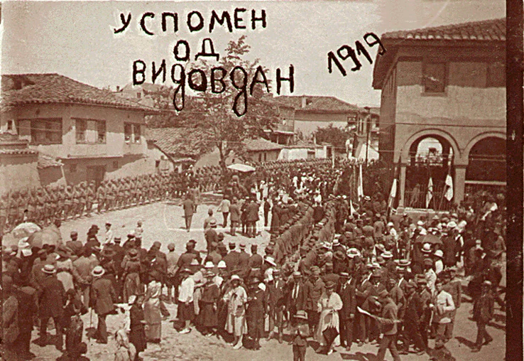
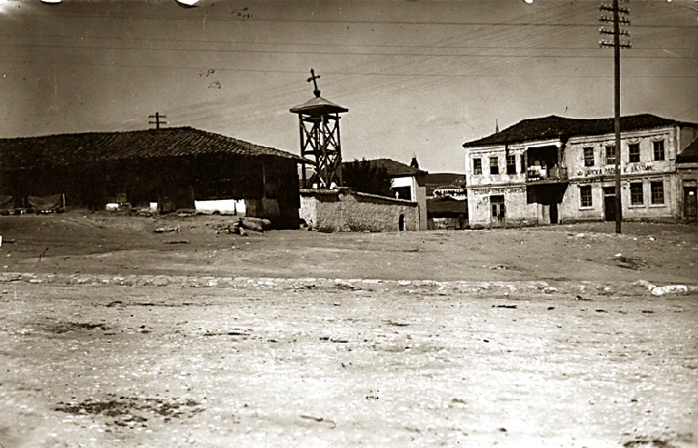
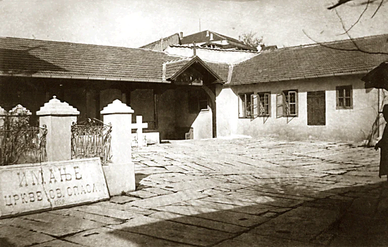
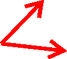

Sveti Spas
- Producción
- UFUŽ y Cine Documental Praga
- Guion y dirección
- Slavko Janevski y EMAN CANERA
- Año
- 1959
- Duración
- 00:31

La iglesia de San Pantaleón, sobre el pueblo de Gorno Nerezi, al suroeste de Skopie. La levantó Alejo Comneno, de la familia de los Comnenos, en 1164. Se conserva la inscripción del dintel de mármol en el paso del nártex a la nave. El edificio, de una sola nave, de piedra y ladrillo, tiene una cúpula central octogonal y cuatro pequeñas cúpulas cuadradas en las esquinas. Es el monumento bizantino más antiguo no solo de Skopie, sino de toda Macedonia. Se pintó justo después de construirse y de nuevo en los siglos XV, XVI y XIX, pero sus frescos originales lo convierten en un monumento excepcional.


La Santa Madre de Dios, construida en 1835. Estaba en la margen izquierda del Vardar. Con influencias de la arquitectura bizantina y elementos urbanos barrocos contemporáneos en el tratamiento del espacio. Ardió durante la Segunda Guerra Mundial. Hasta entonces era la catedral de la ciudad; después lo fue San Demetrio. (años 1920)

Iglesia de la Santa Madre de Dios - años 1920.

Reunión del pueblo en la fiesta de Vidovdan, en el patio de la iglesia de la Santa Madre de Dios - 1919.

La iglesia de San Demetrio se construyó en el siglo XVIII en el lugar de la iglesia medieval homónima. Se reparó en 1886-94, cuando se hicieron la cerca y el campanario. Hasta 1980 fue catedral. Está en la margen izquierda del Vardar, cerca del puente de piedra (años 1920).

Iglesia de San Demetrio - años 1930.

La metrópolis de Skopie. Estaba en el malecón de la margen izquierda del Vardar - años 1920.

La calle principal en formación (hoy la calle «Makedonija», que va del actual Museo de la Ciudad de Skopie al puente de piedra). A la derecha se ve la iglesia católica (Casa de Santa Marta) de estilo gótico y, a la izquierda, algunos edificios. Se construyó con una donación del gobierno austriaco. El tramo junto al puente de piedra se pavimentó en 1911 para el paso del sultán Murad V, que visitó Skopie antes de partir hacia Kosovo Polje.

La iglesia católica de estilo gótico, construida a principios del siglo XX - años 1920.

La calle principal hacia la plaza. En primer plano, la iglesia católica. (años 1950)

La calle principal en dirección a la estación (el actual Museo de la Ciudad de Skopie). A la izquierda se ve la iglesia católica. (años 1950)

El campanario de la iglesia Sveti Spas - años 1910.

La iglesia Sveti Spas está frente a la fortaleza de Skopie - Kale. Se levantó a finales del siglo XVII. Es una iglesia pequeña, medio hundida en la tierra. Destaca por uno de los iconostasios más antiguos y bellos, tallado en madera en relieve profundo por los hermanos Frčkovski de Galičnik: Petre, como maestro, Marko y Makarija. Aparecen representados en el lado derecho del iconostasio, realizado en 1814-1824. La foto es de los años 1920.

El patio de la iglesia Sveti Spas. La fotografía es de los años 1930.

Panorama de Skopie. Abajo, en primer plano, la iglesia Sveti Spas - años 1970.

La iglesia de San Jorge - en el barrio «Čair» - años 1930.

La iglesia «San Constantino y Santa Elena». - años 1930.

El Templo de la Gloria y el cementerio militar de las guerras balcánicas. Consagrado en 1928. (años 1930)





 Acueducto4 postales
Acueducto4 postales Kale30 postales
Kale30 postales Puentes60 postales
Puentes60 postales Malecón58 postales
Malecón58 postales Plaza46 postales
Plaza46 postales Edificios66 postales
Edificios66 postales Templos cristianos19 postales
Templos cristianos19 postales Edificios musulmanes33 postales
Edificios musulmanes33 postales Casino de Oficiales29 postales
Casino de Oficiales29 postales Teatro28 postales
Teatro28 postales Estación de ferrocarril13 postales
Estación de ferrocarril13 postales Escuelas36 postales
Escuelas36 postales Parques12 postales
Parques12 postales Mercados18 postales
Mercados18 postales Calles38 postales
Calles38 postales Panorama I60 postales
Panorama I60 postales Panorama II30 postales
Panorama II30 postales Collages55 postales
Collages55 postales Inundaciones9 postales
Inundaciones9 postales Terremoto27 postales
Terremoto27 postales Skopie 200026 postales
Skopie 200026 postales